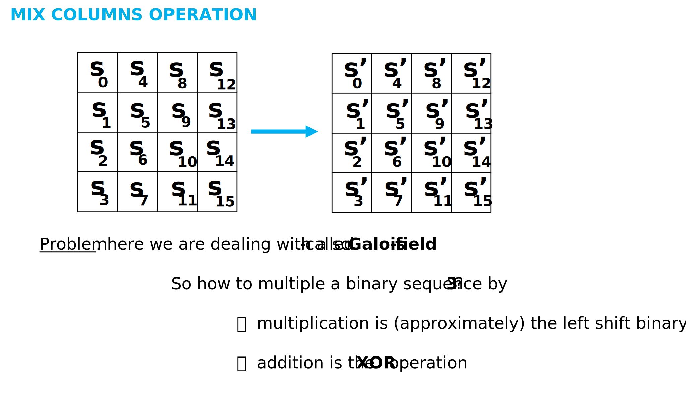
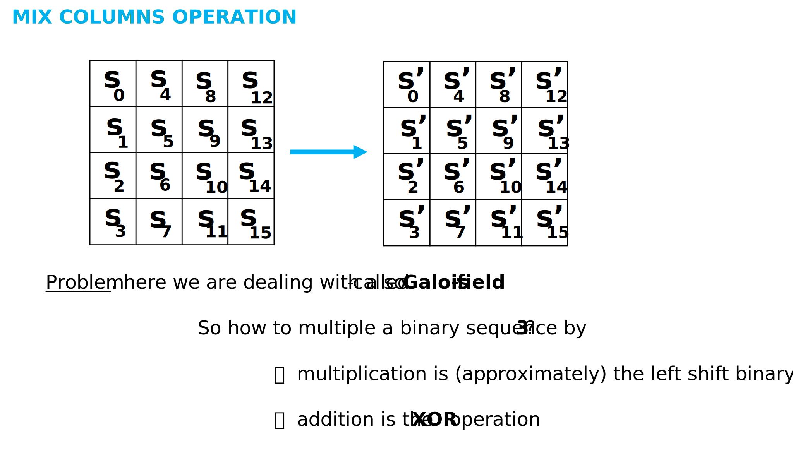

Vernam Cipher
It was first constructed by Frank Miller in 1882. In this cryptosystem we will be using as many letters in the key as the length of the plaintext.
To prevent Information Leaking we are going to use totally random numbers to shift the letters in the plaintext, therefore the key must have the same size as the plaintext plus the key must contain random numbers.
Let's start with the algorithm, we generate a truly random sequence (as many random numbers as the letters in the plaintext) which mean we must not reuse the same numbers over and over again. Finally, we shift the letters in the plaintext with the random numbers in the same manner as in Vigenere Cipher or Caesar Cipher.
Of course if we analyze the ciphertext with Kasiski-method, there will be no information leaking because every letter in the ciphertext is equally likely.
Here is an example below of an analysis using Kasiski-method :

Before we give some examples here are the formulas :
- Encryption : Ei (xi) = (xi + VERNAMi) mod 26
- Decryption : Di (xi) = (xi - VERNAMi) mod 26
The main problem as far as Vernam Cipher is concerned is how to generate the random numbers. Unfortunately nowadays we still can't generate true random numbers so we generate pseudo-random numbers and the values are not independent of each other therefore pseudo-random numbers can repeat themselves and then be predicted. That is why it's not used because it's correct implementation is nearly impossible.

 
